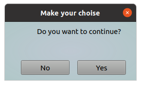
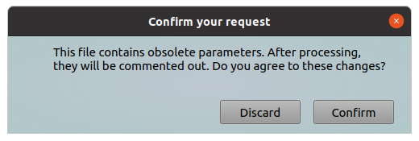
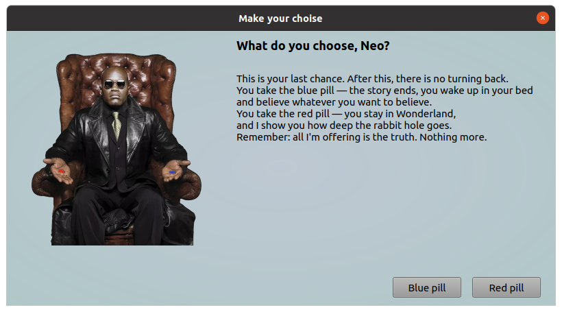

This tool will show a dialog in which you can specify a simple question, assumes what the response will be "yes" or "no".
The answer will returned back to requesting program.
This tool provide you a different parameters to allow you to customize your request in wide manner.
All parameters should be provided via command line.
Options:
| Short | Long | Description |
|---|---|---|
| -h | --help | Will show help and exit |
| -q | --question "Your question" | A text message, it should clarify your request |
| -t | --dtitle "New dialog title" | A text string which will show in dialog header |
| -a | --yesbtn "New btn label" | This text will show on "Yes" button, i.e. you can rename this button |
| -b | --nobtn "New btn label" | This text will show on "No" button, i.e. you can rename this button |
| -m | --morpheus | If you specify this option a picture with Morpheus from Matrix will shown |
| -x | --sizex window_width | This parameter allow you to customize window width (default 270 pixels, minimum 270) |
| -y | --sizey window_height | This parameter allow you to customize window height (default 120 pixels, minimum 120) |
Examples:
Ask a simple question
#!/bin/bash
# some actions here
resp=$(ytools-query-yesno --question "Do you want to continue?")
echo "User replied: " ${resp}
As a result following window will appear:

Question with custom dialog
In this example we changing dialog size, we using HTML markups in question text, we changing dialog title, and we are renamed "Yes" and "No" buttons.
#!/bin/bash
# some actions here
resp=$(ytools-query-yesno -x 500 -y 100 -q "This file contains obsolete parameters. After processing,<br>they will be commented out. Do you agree to these changes?" --dtitle "Confirm your request" -a "Confirm" -b "Discard")
if [ "${resp}" == "Yes" ]; then
echo "User agree!"
else
echo "User was declined the offer and we must choose a different way"
fi
As a result following window will appear:

Advanced using
In this example we changing dialog size, we using HTML markups in question text, we changing dialog title, we are renamed "Yes" and "No" buttons. Also we will show a Morpheus.
#!/bin/bash
# some actions here
resp=$(ytools-query-yesno -x 800 -y 400 -t "Make your choise" -q "<h3>What do you choose, Neo? </h3><br>This is your last chance. After this, there is no turning back.<br>You take the blue pill — the story ends, you wake up in your bed<br> and believe whatever you want to believe.<br>You take the red pill — you stay in Wonderland,<br>and I show you how deep the rabbit hole goes.<br>Remember: all I'm offering is the truth. Nothing more." --yesbtn "Red pill" --nobtn "Blue pill" --morpheus)
if [ "${resp}" == "Yes" ]; then
echo "Go out from matrix"
else
echo "Wake up in your bed"
fi
As a result following window will appear:

Show help
This command will show a help message.
query-yesno --help
As a result following information will shown:
query-yesno - this tool will show a dialog in which you can specify a simple question, assumes what the response will be "yes" or "no".
The answer will returned back to requesting program. All parameters should be provided via command line.
Options:
-q --question "Your question" A text message, it should clarify you request
-t --dtitle "New dialog title" A text string which will show in dialog header
-a --yesbtn "New btn label" This text will show on "Yes" button, i.e. you can rename this button
-b --nobtn "New btn label" This text will show on "No" button, i.e. you can rename this button
-m --morpheus If you specify this option a picture with Morpheus from Matrix will shown
-x --sizex window_width This parameter allow you to customize window width (default 270 pixels, minimum 270)
-y --sizey window_height This parameter allow you to customize window height (default 120 pixels, minimum 120)
-h --help Will show help and exit